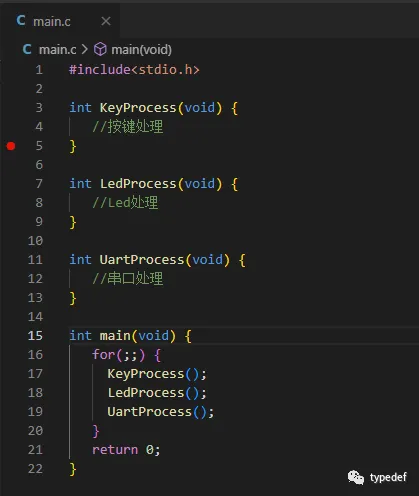
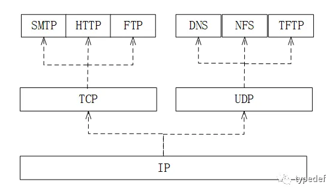
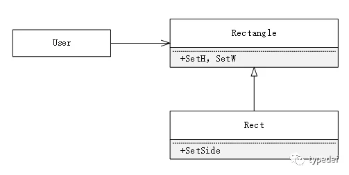
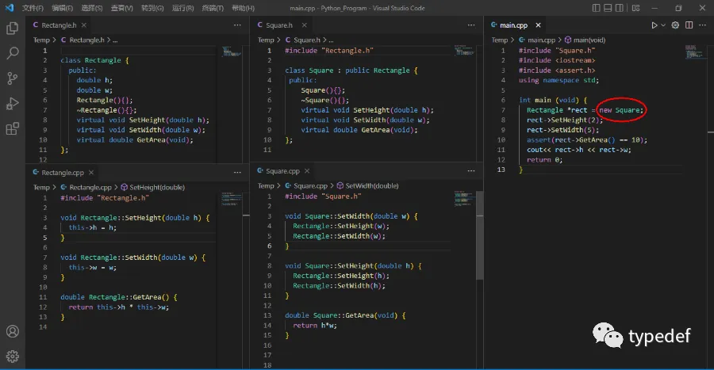
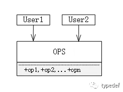
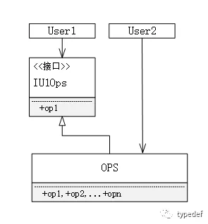
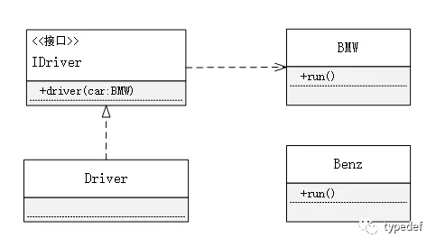
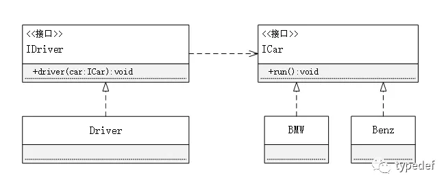

前序
最近看 nest 文档的时候看到文章中经常提到 SOLID，于是寻找资料了解一下关于 SOLID 的定义。
SOLID 是五大基本原则，被 Bob 大叔称为 SOLID 原则，字母为每个原则的首字母，遵循这些原则能够让你的代码在扩展性、维护性以及重用性提高。而这些不正是我们所追求的吗？
接下来我们就一块学习学习这些原则，内容较多，建议先收藏后反复观看，文章末尾有很多参考链接。
五大基本原则-SOLID
1.SRP
SRP(The Single Responsibility Principle)单一职责原则。
SRP 是 SOLID 五大设计原则中最容易被误解的一个，SRP 不就是每个模块都应该只做一件事吗？非也非也，这只是在实现底层细节的实际原则，并非是 SRP 的全部。
SRP 最初是这样描述的：
任何一个模块都应该有且只有一个被修改的原因(There should never be more than one reason for a class to change)
SRP 的定义几经迭代，最终被 Robert C.Martin 在《Clean Architecture》中定义为
任何一个软件模块都应该只对某一类行为者负责
那么上文中提到的软件模块究竟是指什么呢？大部分情况下，其最简单的定义就是指一个源代码文件。然而有些编程语言和编程环境并不是用源代码文件来存储程序的。在这些情况下，软件模块指的就是一组紧密相关的函数和数据结构。
来看一个正面例子，C 标准库中的
再来看一个反面例子，还记得刚开始学习单片机编程的时候，项目工程中从始至终就一个 main 源文件，真的是连头文件都不写的，一个 main 里面包含了 LED、按键等相关全部代码，这明显是不符合 SRP 这一原则的。就像下图一样。 
2. OCP
OCP(The Open-Closed Principle)开放封闭原则。
OCP 的定义如下：
软件实体应当对扩展开放，对修改关闭（Software entities should be open for extension，but closed for modification）
设计良好的计算机软件应该易于扩展，同时抗拒修改。换句话说，一个良好的计算机系统应该在不需要修改的前提下就可以轻易被扩展。
OCP 是系统框架设计的主导原则，其主要目的是让系统易于扩展，同时限制其每次被修改所影响的范围。实现的方式是通过将系统划分为一系列的组件，并且将这些组件的依赖关系按层次结构进行组织，使得高阶的组件不会因低阶组件被修改而受到影响。
我们来看一个网络中协议的例子，如下图：
 图中分为三个层级，最上方层级最高，每个层级有若干组件，高层级的组件依赖低层级的组件。
3. LSP
LSP(LSP-Liskov Substitution Principle)里氏替换原则。
LSP 定义：
使用基类对象指针或引用的函数必须能够在不了解衍生类的条件下使用衍生类的对象(Functions that use pointers or references to base classes must be able to use objects of derived classes without knowing it)
里氏代换原则中说，任何基类可以出现的地方，子类一定可以出现。只有当衍生类可以替换掉基类，软件单位的功能不受到影响时，基类才能真正被复用，而衍生类也能够在基类的基础上增加新的行为。
我们来看一个经典的反面案例，正方形(Square)与长方形(Rectangle)。
那这里提出疑问了，正方形和长方形之间的继承关系是如何呢？
如果 A is-a B，则认为 B 是基类，A 为子类，A 应该继承 B。那这个简单了，众所周知正方形是长方形，立即推，长方形是基类，正方形是子类，正方形应该继承长方形
 基类长方形中有 SetHeight()和 SetWidth()方法，但是子类正方形有一个特点，长和宽是相等的，所以在实现 SetHeight()和 SetWidth()都必须同时设置宽和高，我们来看代码。

还是那句话任何基类可以出现的地方，子类一定可以出现，所以在创建 Rectangle 对象指针的时候，这里其实给的是子类的对象，最终代码运行断言报错。
Assertion failed: rect->GetArea() == 10, file .\main.cpp, line 10
如果 new 出来的对象是 Rectangle，则程序能够正常执行。如果 new 出来的是 Square 则会进入断言。从而 Square 不能代替 Rectangle，所以不符合 LSP 原则，实际上 Square 并不是 Rectangle 的子类。
正方形是长方形，但是他们的行为并不一样，所谓的行为，就是抽象出来的东西。正方形只要有一个设置边长的方法就行了，而长方形需要设置宽和高两种方法。
4. ISP
ISP(ISP-Interface Segregation Principle)接口隔离原则。
ISP 定义：
不应强制客户端依赖于它们不使用的接口(Clients should not be forced to depend upon interfaces that they do not use.)
该原则还有另外一个定义：一个类对另一个类的依赖应该建立在最小的接口上（The dependency of one class to another one should depend on the smallest possible interface）
假如现在有一个 OPS 类。用户 1 只需要使用 OPS 类的 op1 方法，用户 2 只需要 OPS 类的 op2 方法，但是呢，OPS 类除了提供 op1 和 op2 方法还提供了若干方法。如下图：
 此时用户 2 没什么意见，心想着反正能实现我要的功能就可以了。
但是呢，用户 1 不愿意，于是就去找开发人员理论，我就要实现一个 op1 功能，给我整这么多依赖干啥。除了这个功能，其他的全部都给我隐藏掉，下班之前我就要，说完头一扭就走了。
开发人员心想，这么简单的事情，让我下班之前给你，这不是图片眼看人低吗，说完就在用户 1 和 OPS 之间又封装一层 IU1Ops 接口，两分钟搞定。于是就去跟用户 1 说，你用 IU1Ops，里面有你要的接口，拿去用吧。说完头一扭就走了。模型如下图： 
接口隔离原则和单一职责都是为了提高类的内聚性、降低它们之间的耦合性，体现了封装的思想，但两者是不同的：
单一职责原则注重的是职责，而接口隔离原则注重的是对接口依赖的隔离。 单一职责原则主要是约束类，它针对的是程序中的实现和细节；接口隔离原则主要约束接口，主要针对抽象和程序整体框架的构建。
5. DIP
DIP(DIP-Dependency Inversion Principle)依赖倒置原则。
DIP 定义： 高层次的模块不应该依赖低层次的模块，他们都应该依赖于抽象(High level modules should not depend upon low level modules. Both should depend upon abstractions)抽象不应该依赖于具体实现，具体实现应该依赖于抽象(Abstractions should not depend upon details. Details should depend upon abstractions)
这个名字看着有点别扭，“依赖”还“倒置”，这到底是啥意思？
依赖指两个相对独立的对象，当一个对象负责构造另一个对象的实例，或者依赖另一个对象的服务时，这两个对象之间主要体现为依赖关系。
老样子，看示例，现在甲方需要能让 BMW 车跑起来的功能，再看一下乙方的设计。
 司机有驾驶 BMW 车辆的方法，BMW 车辆有 run 的方法，所以是甲方满足需求的。
后来甲方需求变了，甲方不仅要能开 BMW 车，也要能开 Benz 车，却发现使用乙方原来的的设计 Benz 车却开不起来，因为+driver()只接受 BMW 的车辆，不接受 Benz 的车辆，这明显不合理，一个司机会开 BMW 却不会开 Benz，太反常了。于是去找乙方重新设计。
乙方也认识到了不足，经过多方讨论终于有了如下设计。 
对于每种车辆，都应该有一个 run 的方法，所有的车辆都应该继承 ICar 实现。而司机呢，也不应该依赖具体的车辆，而应该依赖所有车辆的抽象方法。原本直接指向 BMW 的依赖箭头被反置了。现在即使甲方在添加别的车辆，司机仍然能开。不会出现只会开 BMW 而不会开其他车辆的情况了。
简单来说，依赖倒转原则就是指：代码要依赖于抽象的类，而不要依赖于具体的类；要针对接口或抽象类编程，而不是针对具体类编程。根据上面的例子可以加深理解。
依赖倒置原则（Dependency Inversion Principle）是很多面向对象技术的根基。它特别适合应用于构建可复用的软件框架，并且，因为抽象和细节已经彼此隔离，代码也变得更易维护。
采用依赖倒置原则可以减少类间的耦合性，提高系统的稳定性，减少并行开发引起的风险，提高代码的可读性和可维护性。
参考链接
- https://mp.weixin.qq.com/s/bHjlQjaZOuqekJxw1D0wlA
- https://www.freecodecamp.org/news/solid-principles-explained-in-plain-english/
- https://davesquared.net/2009/01/introduction-to-solid-principles-of-oo.html
- http://butunclebob.com/ArticleS.UncleBob.PrinciplesOfOod
- https://www.jianshu.com/p/3875283e26c7
- https://www.jianshu.com/p/c3ce6762257c
- https://zhuanlan.zhihu.com/p/280765580